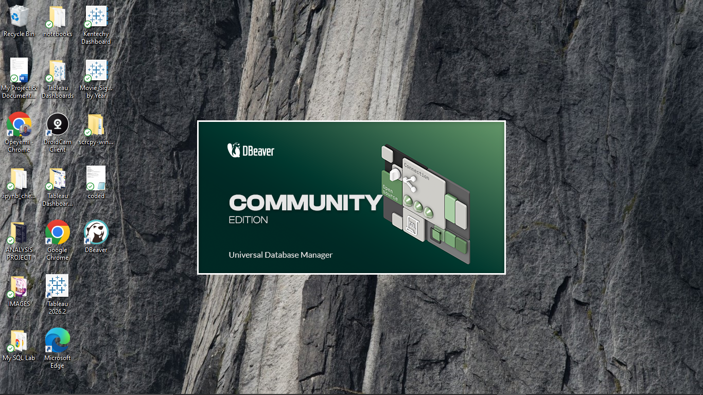

A Data and Business Intelligence Analyst who transforms
complex data into clear, actionable insights that support better business
decisions.
I use SQL, Python, Microsoft Excel, and Tableau to explore
data, uncover patterns, measure performance, and communicate insights that
help teams act with confidence.
FEATURED PROJECTS
These are the projects I currently prioritize most — combining analytical depth,
story-driven communication, and practical business impact.

Olist E-Commerce Analysis
End-to-end SQL analysis of Brazilian e-commerce performance, customer behavior, order flow, and seller activity.
A collection of analytical projects where I apply data cleaning,
analysis, visualization, SQL, and business intelligence to solve practical
problems and communicate meaningful insights.
E-Commerce Analytics · SQL Analysis · Business Intelligence
Scroll to explore
An end-to-end SQL analysis of the Olist Brazilian e-commerce marketplace. The project examines
customer behavior, order flow, product demand, payment patterns, reviews, delivery operations,
and seller performance using relational data analysis.
A Microsoft Excel business analysis project evaluating customer banking experience across 20 major Nigerian commercial banks using a custom Banking Experience Index.
An end-to-end analysis of data-related job postings designed to understand hiring demand across roles,
companies, locations, and recruitment platforms.
A commercial performance analysis of Sunrise Coffee, exploring revenue, profitability, customer loyalty,
regional performance, store formats, and growth opportunities.
Data Audit · Quality Investigation · Decision Support
Scroll to explore
A data-quality investigation and business audit focused on identifying inconsistencies, outliers,
and reporting gaps in key operational data.
More projects and analytical case studies will be added as I continue exploring new business problems and datasets.
PROFESSIONAL PROFILE
ABOUT
Data Analyst | Business Intelligence
Profile
I'm Opeyemi Peter Ismail, a Data Analyst focused on transforming raw and complex datasets into clear, actionable insights that support better business decision-making.
My work involves data cleaning and validation, exploratory analysis, relational data analysis, business analysis, dashboard development, and insight generation. I enjoy investigating data to identify patterns, understand performance, uncover opportunities, and communicate findings clearly.
What I Bring
01
Data Analysis
Cleaning, validating, exploring, and interpreting datasets to uncover meaningful patterns and trends.
02
Business Insight
Connecting analytical findings to business questions, performance measurement, and actionable recommendations.
03
Data Visualization
Developing dashboards and visual reports that make trends, KPIs, and findings easier to understand.
04
Analytical Communication
Communicating insights clearly so analytical findings can be understood and used in real decisions.
Technical Toolkit
Analysis & Querying
SQLPythonMicrosoft Excel
Visualization & BI
TableauPower BIPivot Charts
Python Libraries
PandasNumPyMatplotlibBeautifulSoupRequests
Tools
Jupyter NotebookDuckDBDBeaverGitHub
Data = Insight. Insight = Better Decisions.
CONTACT ME
Have a project, opportunity, or idea you'd like to discuss?
Send me a message and I'll get back to you.
Message Sent! ✨
Thanks for reaching out! Your message has been received successfully.
I’ll get back to you as soon as possible.
OPEYEMI PETER
Thanks for stopping by. Whether you're here to collaborate or just curious, I appreciate the visit.